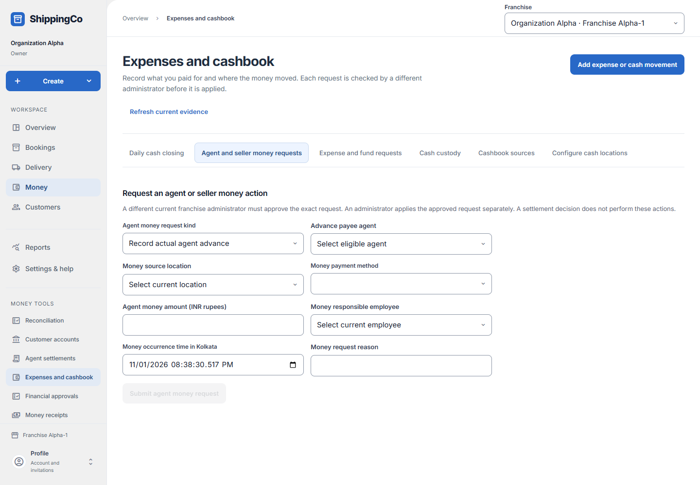

Agent money and seller COD
What this helps you do
- Keep seller COD, agent fees and agent advances distinct and traceable.
Open this feature
- Money > Agent settlements > Open COD and agent fees.
- Check the active branch first. Available actions depend on your role and the selected record.


Record COD or fee sources
- Choose Money action. For a seller beneficiary, leave Existing beneficiary blank to create or select one to revise; enter seller name and active state.
- For a COD obligation choose booked parcel, active seller beneficiary and explicit rupee amount. For reservation choose the active obligation and a collected receipt for the same customer. Seller COD remains separate from freight payment.
- For fee terms choose eligible agent, per-delivery or agreed-period basis, start and exclusive end in Kolkata, and explicit amount. For an earning choose the active fee-term revision and, for per-delivery fees, completed unearned delivery proof.
- Record money source only after checking the linked evidence. Use View records to show one catalogue; Refresh money sources and Load more retrieve current or remaining records. Saving a source does not move money.
Prepare an agent or seller payment request
- Open Expenses and cashbook > Agent and seller money requests. Choose request kind. For advance select payee agent. For fee select Recorded fee earning and enter Fee expense payee description.
- Enter Direct fee payment and Apply recorded advance separately. Select Original advance request when applying advance. Seller payment requires Reserved seller COD allocation and Private seller payment reference.
- Choose money source location, an allowed method, amount, responsible employee, occurrence time in Kolkata and reason. Submit agent money request for different-administrator review. Approval alone does not perform a bank transfer.
Fields and when to use them
These fields belong to the actions above. Complete the fields for your selected action; optional filters may stay blank.
- Money action: Select the money action appropriate to the action explained above. Use when shown for the selected action.
- Existing beneficiary (leave blank to create): Select the existing beneficiary (leave blank to create) appropriate to the action explained above. Use when shown for the selected action.
- Seller beneficiary name: Enter a short, clear name that your staff will recognise. Required when this field is shown.
- Booked parcel for COD: Choose the matching saved record. Check the customer and amount before continuing. Use when shown for the selected action.
- Active seller beneficiary: Select the active seller beneficiary appropriate to the action explained above. Use when shown for the selected action.
- Active COD obligation: Select the active cod obligation appropriate to the action explained above. Use when shown for the selected action.
- Collected receipt for same customer: Choose the matching saved record. Check the customer and amount before continuing. Use when shown for the selected action.
- Eligible fee agent: Choose the actual person responsible from the available list. Use when shown for the selected action.
- Fee basis: Select the fee basis appropriate to the action explained above. Use when shown for the selected action.
- Fee period starts in Kolkata: Enter the fee period starts in kolkata for this action, using the time zone shown. Required when this field is shown.
- Fee period ends in Kolkata (exclusive): Enter the fee period ends in kolkata (exclusive) for this action, using the time zone shown. Required when this field is shown.
- Active fee term revision: Select the active fee term revision appropriate to the action explained above. Use when shown for the selected action.
- Completed unearned delivery proof: Select the completed unearned delivery proof appropriate to the action explained above. Use when shown for the selected action.
- Explicit amount (INR rupees): Enter the actual amount in rupees. Use no more than two decimal places. Required when this field is shown.
- Agent money request kind: Choose the actual person responsible from the available list. Use when shown for the selected action.
- Advance payee agent: Choose the actual person responsible from the available list. Use when shown for the selected action.
- Recorded fee earning: Select the recorded fee earning appropriate to the action explained above. Use when shown for the selected action.
- Fee expense payee description: Choose the matching saved record. Check the customer and amount before continuing. Required when this field is shown.
- Direct fee payment (INR rupees): Enter the value in rupees, with at most two decimal places. Check the limit shown on screen. Required when this field is shown.
- Apply recorded advance (INR rupees): Enter the value in rupees, with at most two decimal places. Check the limit shown on screen. Required when this field is shown.
- Original advance request: Select the original advance request appropriate to the action explained above. Use when shown for the selected action.
- Reserved seller COD allocation: Select the reserved seller cod allocation involved in this action; check its account and responsible person. Use when shown for the selected action.
- Private seller payment reference: Use the reference from the matching saved record or real supporting document. Do not invent one. Required when this field is shown.
- Money source location: Select the money source location involved in this action; check its account and responsible person. Use when shown for the selected action.
- Money payment method: Choose how the money was paid or checked. Use the option that actually applies. Use when shown for the selected action.
- Agent money amount (INR rupees): Enter the actual amount in rupees. Use no more than two decimal places. Required when this field is shown.
- Money responsible employee: Choose the actual person responsible from the available list. Use when shown for the selected action.
- Money occurrence time in Kolkata: Enter when the event really happened. Use the time zone named in the label. Required when this field is shown.
- Money request reason: Explain why you are making this request or change. Use the real business reason. Required when this field is shown.
If you need to retry
- No records: check branch, account or customer and filters. Use Load more where offered before deciding a record is missing.
- Invalid or missing value: read the form message, correct the draft, then review amounts and references again.
- Uncertain save: use the offered retry for the same request. Do not create a second payment, return, expense or application to guess whether the first saved.
- Changed evidence or policy: refresh current records and review them before a new request. A saved report retains its captured figures; create another report for current results.
About this guide
Checked against the current screen code on 1 November 2026. This explains app behaviour, not tax or accounting advice. Buttons and records can differ by role.